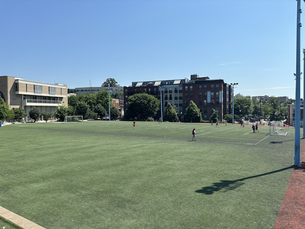

Fields

- Marie Reed
- Transportation: 20 minute walk from Woodley Park Metro stop
- Bathrooms: Available when Aquatic Center is open
- Water: Outdoor fountains on site
- Surface: Turf
- Number: 1
- Rating: 6/10
- Availability: See Marie Reed website
- Additional Notes: Soccer field has lights, but the field and goals are smaller than regulation size. The Recreation Center also houses 2 tennis courts.